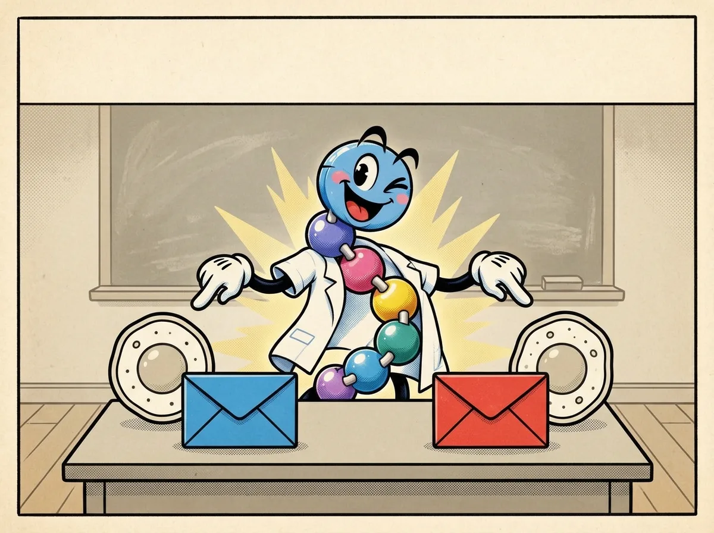
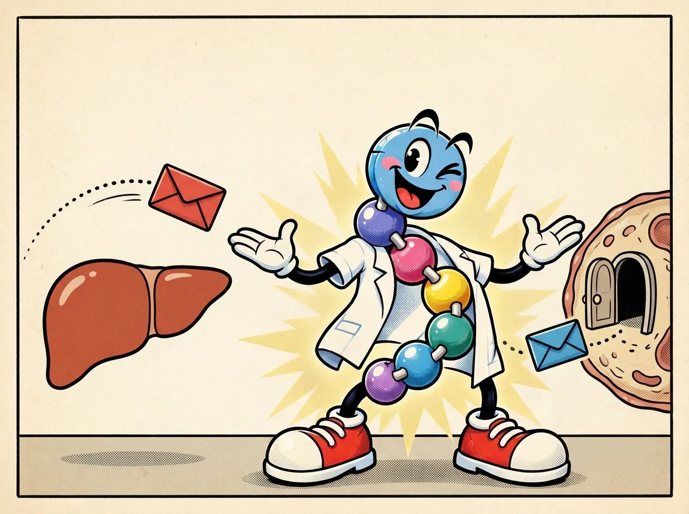

The signal cast
Distinguish insulin and glucagon by their source and general role in blood-glucose regulation without treating the cartoon as a control diagram.


What the comic means
The clean version
In the pancreas, beta cells release insulin and alpha cells release glucagon. Insulin helps the body use glucose; glucagon signals the liver to release glucose when blood glucose is low. They are partners in regulation, not a good peptide and a bad peptide. [1]
One level deeper
Both are peptide hormones released by different cells in the pancreatic islets. Rising glucose stimulates insulin release from beta cells; low glucose is a stimulus for glucagon release from alpha cells. Insulin helps many cells take up or store fuel, while glucagon acts prominently on the liver to support glucose output. Their signals interact rather than forming a simple on/off switch. [1][2]
Mechanism lens
The islet and liver are not one linear pathway. Hormone secretion depends on nutrient state and islet-cell signaling, while downstream responses depend on tissue receptors and metabolism. Glucagon supports hepatic glycogen breakdown and glucose production; insulin has multiple tissue-specific actions. Peppy’s envelopes omit concentrations, timing, receptor kinetics and feedback, so this panel cannot predict an individual response. [1][2]
Beads aren't biology.
Envelopes do not enter cells like mail. The liver is not the only relevant tissue, and the colors do not encode molecular structure, safety, importance or clinical use. The trajectories in panel two are decorative; no direction or time scale can be inferred.
Check your understanding
Which is accurate: insulin and glucagon are the same message in two colors, or different signals made by different islet cells?
Reveal answer
Different signals. Beta cells release insulin; alpha cells release glucagon. Their effects depend on biological context, so neither is simply good or bad.
Check the science
- NIDDK — Discovery of glucagon and GLP-1 medicines — Islet beta/alpha cells, insulin and glucagon roles
- Endotext (NCBI Bookshelf) — Glucagon Physiology — Low glucose, liver glucose output and islet regulation
Sources support the biology; comic poses and colored beads are illustrative. Educational content is not medical advice.